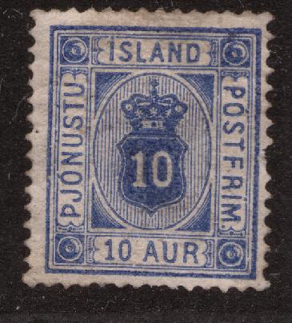

{kind=link}

Island - Islande
Return To Catalogue - Island - Denmark
Note: on my website many of the
pictures can not be seen! They are of course present in the
catalogue;
contact me if you want to purchase the catalogue.
3 a yellow 4 a grey 5 a brown 10 a blue 16 a red 20 a green 50 a lilac
These stamps have watermark 'Crown'. Most stamps have perforation 14 x 13 1/2. The 4 a only exists with perforation 12 1/2, the 3 a and 10 a also exist with perforation 12 1/2.
Value of the stamps |
|||
vc = very common c = common * = not so common ** = uncommon |
*** = very uncommon R = rare RR = very rare RRR = extremely rare |
||
| Value | Unused | Used | Remarks |
| 3 a | * | * | |
| 4 a | ** | ** | |
| 5 a | * | * | |
| 10 a | * | * | |
| 16 a | *** | *** | |
| 20 a | ** | ** | |
| 50 a | *** | *** | |
Overprinted '1 GILDI '02-'03'

3 a yellow 4 a grey 5 a brown 10 a blue 16 a red 20 a green 50 a lilac
The values 3 a, 4 a, 5 a, 10 a and 20 a exist with perforation 12 1/2. The values 3 a, 5 a, 10 a, 16 a and 50 a exist with perforation 13 1/2 x 14.
Value of the stamps |
|||
vc = very common c = common * = not so common ** = uncommon |
*** = very uncommon R = rare RR = very rare RRR = extremely rare |
||
| Value | Unused | Used | Remarks |
| 3 a | * | * | |
| 4 a | * | * | |
| 5 a | * | * | |
| 10 a | * | * | |
| 16 a | ** | ** | |
| 20 a | ** | ** | |
| 50 a | ** | ** | |
3 a yellow and black 4 a green and black 5 a brown and black 10 a blue and black 16 a red and black 20 a green and black 50 a violet and black
These stamps have watermark 'Crown' and perforation 12 1/2.
Value of the stamps |
|||
vc = very common c = common * = not so common ** = uncommon |
*** = very uncommon R = rare RR = very rare RRR = extremely rare |
||
| Value | Unused | Used | Remarks |
| 3 a | * | * | Inverted center: RRR |
| 4 a | * | c | |
| 5 a | * | c | |
| 10 a | * | * | |
| 16 a | * | * | |
| 20 a | * | * | Error: 20 a blue and black: RR |
| 50 a | ** | ** | |
3 a yellow and grey 4 a green and grey 5 a brown and grey 10 a blue and grey 15 a blue and grey 16 a red and grey 20 a green and grey 50 a violet and grey
These stamps have watermark 'Crown' and perforation 12 1/2. The 15 a also exists with watermark 'Cross'
Value of the stamps |
|||
vc = very common c = common * = not so common ** = uncommon |
*** = very uncommon R = rare RR = very rare RRR = extremely rare |
||
| Value | Unused | Used | Remarks |
| 3 a | c | c | |
| 4 a | * | c | |
| 5 a | * | c | |
| 10 a | * | c | |
| 15 a | * | * | Watermark 'Cross': * |
| 16 a | * | * | |
| 20 a | * | * | |
| 50 a | ** | ** | |

3 a orange and grey 4 a green and grey 5 a orange and grey 10 a blue and grey 15 a blue and grey 20 a green and grey 50 a violet and grey 1 K red and grey
These stamps have watermark 'Cross' and perforation 14 x 14 1/2.
Value of the stamps |
|||
vc = very common c = common * = not so common ** = uncommon |
*** = very uncommon R = rare RR = very rare RRR = extremely rare |
||
| Value | Unused | Used | Remarks |
| 3 a | c | c | |
| 4 a | c | c | |
| 5 a | c | c | |
| 10 a | * | c | |
| 15 a | * | * | |
| 20 a | * | c | |
| 50 a | ** | * | |
| 1 K | ** | * | |
Stamps with inscription 'Stimpilmerki' are fiscal stamps.